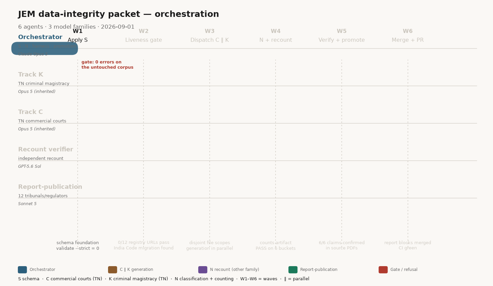

Legend — every letter on this page
The packet names its tracks with single letters. They are not secret codes. Hover any chip or table cell. The same legend is printed on the GIF itself, so a downloaded frame is still readable off-site.
Packet tracks (the letters in the apply-order diagram)
| Letter | Means | Why that letter | What it produced this run |
|---|---|---|---|
| S | Schema foundation. Adds types and fields, then validate.py --strict must stay at 0 errors on the untouched corpus before anything else runs. | Packet file 01_SCHEMA_SPEC.md. Serial gate. | CommercialCourt type, pecuniary_jurisdiction, report_publication, legal-instrument refs, two-axis classification. |
| C | Generation track: Tamil Nadu commercial courts that have actually been notified. Emits entity YAML and a suggested-edge table. Never auto-applies relationships. | Packet prompt 03_CURSOR_C_commercial_courts.md. | 5 entities, 15 suggested edges, 13/13 claims confirmed in gazette PDFs. |
| K | Generation track: Tamil Nadu criminal magistracy below District & Sessions (Chief Judicial Magistrate and below). Same rules as C: named courts only, notification in hand. | Packet letter, not an acronym. Prompt 04_CURSOR_K_criminal_magistracy.md. | 1 entity (cjm_nilgiris), 4 documented refusals, live BNSS primary located. |
| N | Classification and numbering: flag generic rollups, write entity_counts.yaml, then an independent recount on a different model family must match. | Packet prompt 05_CURSOR_N_classification_counting.md. Runs last because it counts the corpus C and K just enlarged. | 1087 countable + 64 generics = 1151 files. Recount PASS. |
| report | Meta-provenance: for named tribunals/regulators, does the statute require a public report, and is one actually published? | Packet prompt 06_CURSOR_report_publication.md. Independent of C/K; overlapping in time. | 12 bodies, 14/14 cited URLs live. Two duty claims downgraded to unknown. |
Waves (W1–W6) — columns of the swimlane
A wave is a moment in the run, not an agent. Several agents can be live in one wave.
| Wave | Name | What happens |
|---|---|---|
| W1 | Apply S | Schema lands. Gate: 0 validator errors on the untouched corpus. |
| W2 | Liveness | URL gate on the legal-instrument registry. Discovers the India Code migration (soft-404 SPA shell). |
| W3 | Dispatch C ∥ K | Commercial and criminal generation fire together because their file scopes do not overlap. |
| W4 | N + recount | Counts artifact is committed; a different model family recomputes the six buckets. |
| W5 | Verify + promote | Orchestrator re-downloads each cited PDF and only then copies staging YAML into canon. |
| W6 | Merge + PR | Report blocks merged (with two corrections). PR opened, CI green. |
Agent-role colours
Places, statutes, institutions, and JEM jargon on this page
| Token | Means |
|---|---|
| TN | Tamil Nadu. This packet’s lattice generation is TN-only, named courts only, structural fields only. |
| CJM | Chief Judicial Magistrate. cjm_nilgiris is the Nilgiris CJM court node. |
| BNSS | Bharatiya Nagarik Suraksha Sanhita, 2023 — India’s current criminal-procedure code (successor to the CrPC). |
| BNS | Bharatiya Nyaya Sanhita, 2023 — the penal code. A live MHA PDF of BNS was fetched and refused because it is the wrong Act. |
| BSA | Bharatiya Sakshya Adhiniyam, 2023 — the evidence Act. In the legal-instrument registry; not a generation track this run. |
| CrPC | Code of Criminal Procedure, 1973. Superseded predecessor of BNSS; kept as historical legal basis where sourced. |
| MHA | Ministry of Home Affairs. Hosts the verified BNSS/BNS/BSA English PDFs. |
| GoI | Government of India. A “GoI primary” is a statute, gazette, judgment, or official report — the only source class that can verify a scored field. |
| SAT | Securities Appellate Tribunal. Mentioned as a suggested (not applied) appeal edge from IFSCA. |
| IFSCA | International Financial Services Centres Authority. Seeded as a gap, not asserted into the graph this run. |
| TRAI | Telecom Regulatory Authority of India. Report-publication row; statutory-duty claim downgraded to unknown. |
| IBBI | Insolvency and Bankruptcy Board of India. Same downgrade as TRAI (private reproduction was not accepted as the duty source). |
| PIB / CAG | Press Information Bureau / Comptroller and Auditor General. Escalation hosts when a body’s own site has no report. |
| SPA | Single-page application. indiacode.gov.in returns a byte-identical 200 HTML shell for every path — a soft-404, not a document. |
| canon | Committed YAML under jem/data/ that the map is built from. Staging files are not canon. |
| ledger | Append-only run record under jem/ledger/. Captures what agents found, including refusals. Not the map. |
| the 44 | The packet’s “contaminated 44” tribunal/regulator set. Not reproducible from the repo (nearest definition yields 51). Report-publication was scoped to 12 named bodies instead. |
| generic / rollup | A scaffold node with is_generic_rollup: true (id ending _generic). Counted as a file, never as an entity. |
1 · Agent roster
Who ran, on which model, who fired them, what they were asked to do, and what they returned.
| # | Agent | Model | Fired by / mode | Assigned | Completed |
|---|---|---|---|---|---|
| 0 | locate Packet locator bc-c7cba901 |
Claude Opus 5 explore, blocking |
User, turn 1 serial — must finish before anything else |
Find agent_orchestrator_JEM.zip / 00_PACKET_INDEX.md in the repo or filesystem | Established the packet did not exist. Negative finding; stopped a fabricated run. |
| 1 | orch Orchestrator this cloud agent |
Claude Opus 5 parent, write access |
User, turn 2 (files arrived) lives across every wave |
Apply S, run N, build the harness, review and promote, commit, open the PR | S schema + gate; N counts; 4 harness modules; 35 new tests; README reconciliation; 12 commits; PR #31 |
| 2 | gen Track K bc-0a2bab58 |
Claude Opus 5 inherited |
Orchestrator, after S green background, parallel with 3 |
TN criminal magistracy below District & Sessions; entity YAML + suggested edges only | 1 entity (cjm_nilgiris); 2 suggested edges; 4 documented refusals; live BNSS primary located |
| 3 | gen Track C bc-ce92556e |
Claude Opus 5 inherited |
Orchestrator, after S green background, parallel with 2 |
TN commercial courts; only notified courts; no auto-applied edges | 5 entities; 15 suggested edges; 13/13 claims verified; the by-class finding |
| 4 | verify N recount bc-5b97a96a |
GPT-5.6 Sol different family on purpose |
Orchestrator, after counts artifact committed background, overlapping C/K |
Independently recompute the six buckets; do not import derive.py | PASS — exact match on all six buckets and four invariants |
| 5 | Report-publication bc-6944b0b0 |
Claude Sonnet 5 thinking-high |
Orchestrator, after host-reachability probe background, overlapping C/K return |
report_publication on 12 named bodies (scoped down from the unreproducible “44”) | 12/12 complete; 14/14 cited URLs live; regulators publish / tribunals don’t |
Agent 4 is on a different model family because the harness scores confidence as agreement × diversity. A second Opus 5 recount would have added a second opinion worth roughly zero.
2 · Firing sequence
What forced the order: S is serial because everything else validates against it. C ∥ K is safe because their file scopes are disjoint. N counts the corpus they enlarge, so it cannot finish first. The recount cannot fire before the artifact exists. Report-publication is independent of generation and only waited on a reachability probe.
0/12 pass
dispatch C∥K
fire recount
promote 6
PR #31
parallel — disjoint scopes
BNSS primary
+ ledger
by-class finding
13/13 confirm
PASS

{kind=link}
{kind=link}
3 · Permissions
Every subagent was generalPurpose, which grants the full tool set. The restrictions below were instruction-level, not sandbox-enforced. None of them wrote to canon — verified by a clean git status after each return — but that is compliance, not containment.
| Capability | 0 locator | 1 orch | 2 Track K | 3 Track C | 4 Recount | 5 Report |
|---|---|---|---|---|---|---|
| Read repo | yes | yes | yes | yes | yes, except derive.py | yes |
| Write jem/data/ | denied | yes | denied | denied | denied | denied |
| Write staging /tmp/track_* | — | yes | yes | yes | — | yes |
| Write ledger/runs/ | — | yes | via orch | via orch | direct | via orch |
| validate.py --entity | — | yes | yes | yes | no | yes |
| derive.py / build.py | — | yes | denied | denied | denied | denied |
| git add/commit/push | denied | yes | denied | denied | denied | denied |
| Network (search + fetch) | — | yes | yes | yes | not needed | yes |
| Apply relationships | — | suggest only | suggest only | suggest only | — | — |
4 · How each agent actually worked
Reconstructed from the attempts arrays in the run ledgers, not from the agents’ summaries.
Agent 0 — packet locator
- Filename globs: *PACKET*, *orchestrator*, classification.py
- Content search for “consensus harness”, “SAT anchor”, “Prajna/Agriya”
- Git history across all branches
- Filesystem-wide .zip search
Four independent strategies, all negative — which is what made the conclusion safe to act on. Handover: back to the user with “not present, please resend” rather than reconstructing the packet from the screenshot.
Agent 1 — orchestrator
- Read all 12 packet files before writing anything
- Two pre-gates that changed the plan: corpus uses 5 types the classification map lacks; most primary-source domains do not resolve
- Apply S → validate.py --strict = 0 on the untouched corpus
- Build the liveness gate → run it on the registry → 0/12 pass → discover the India Code migration → harden against soft-404 SPA shells
- N refactor (flag 64 generics, write entity_counts.yaml)
- Dispatch C ∥ K, then the recount, then report-publication
- Verifier rung on staged output (download PDF, extract text, confirm the notification number)
- Promote 6 entities; merge 12 report blocks (with two corrections); open PR #31
Agent 2 — Track K (criminal magistracy)
- Registry URL indiacode.nic.in/handle/…/20099 — FAIL 404
- Migrated host indiacode.gov.in — FAIL soft_404_catch_all_shell
- Two guessed bitstream deep links — FAIL 404
- Guessed MHA filename 250883_…pdf — PASS liveness, REFUTED on content (it is the penal code, not BNSS)
- PRS 297-page PDF — PASS liveness, REFUTED on content (it is the Bill, not the enacted Act)
- WebSearch “Act No. 46 of 2023 official gazette” — HIT → MHA 250884_2
- curl + pypdf on the VM, read the gazette header — CONFIRMED, 249pp, Act 46 of 2023
- Court discovery: POST search_gazette.php for “Judicial Magistrate” (122 issues, mostly noise) → narrow to “Chief Judicial Magistrate” (24 issues) → open three candidate gazettes → read operative text
Attempts 4 and 5 are the run’s best argument for keeping the verifier rung separate from liveness: both URLs are live PDFs on credible hosts, and both are the wrong document. Handover: staging files plus a report naming the four things it refused and why.
Agent 3 — Track C (commercial courts)
- POST search_gazette.php “Commercial Court” — 5 issues
- Variant queries (“Commercial Courts Act”, etc.) — +1 issue, no new constituting notification
- gazette_list_details.php?id=<b64>&date=<b64> reached the 2019 and 2016 issues, which are not in the keyword index — found only by following supersession references inside the 2021 text
- Per notification: liveness gate → curl → pypdf extract → read operative text
- Verifier: independent re-fetch, literal string check, 13/13 CONFIRM
Step 3 is why this track succeeded where a search-only approach would have stopped at 2021. Handover: 5 entities, a 15-row suggested-edge table, and four decision gates (two of them generalise beyond Tamil Nadu).
Agent 4 — independent recount
- Walk data/entities/**/*.yaml with its own Python, skipping schema paths
- Extract TYPE_CLASSIFICATION from classification.py via ast — never import the module
- Tally the six buckets + generics, record the numbers
- Then open entity_counts.yaml and compare
- Four extra invariants: arithmetic, unmapped types, generic flag/id consistency, duplicate ids
Handover: one JSONL record written directly to ledger/runs/, verdict PASS.
Agent 5 — report-publication
- Locate the entity YAML → read the official site from its sources
- Search the body’s publications page
- Escalate to parent ministry archive
- Escalate to PIB / CAG / Lok Sabha references (N≤3)
- Liveness-gate the candidate document; record the trail either way
- For the statutory duty, go to the constituting Act’s reporting section
When indiankanoon.org returned 403 it substituted self-hosted regulator copies and disclosed the substitution. Handover: CSV + ready-to-merge blocks + ledger. The orchestrator applied two corrections on merge (see below).
5 · Handovers
Nothing crossed from an agent into canon untouched. Each handover was a filter.
| Boundary | What the orchestrator did before accepting |
|---|---|
| 2, 3 → 1 C and K staging |
Re-ran liveness on all 10 cited URLs (10/10 pass), then downloaded each PDF, extracted text, and confirmed the constituting notification number and quoted values were literally present (6/6). Only then promoted. |
| 4 → 1 recount PASS |
Read the ledger record and independently checked the arithmetic rather than trusting the PASS string. |
| 5 → 1 report blocks |
Liveness-checked all 14 cited URLs, then corrected two entries: trai and ibbi had statutorily_required: yes resting on lawgist.in (a private reproduction), so both were downgraded to unknown with the reason recorded. Also normalised YAML 1.1’s boolean false back to the string "no". |
| 1 → repo | Suggested edges were not applied. They sit in ledger/suggested/ because relationships are maintainer-reviewed. |
6 · Prompt registry
A prompt is versioned config. The governing packet prompts lived in the registry before the run. The dispatch prompts — governing prompt plus the run-specific context an agent cannot discover for itself — were registered after the fact. Invariant 5 says they should have been registered first; they are now, and the next run registers before dispatching.
| prompt_id | Kind | Governed | Path |
|---|---|---|---|
| cursor-C-commercial-v1 | governing | Track C | ledger/prompts/03_CURSOR_C_commercial_courts.md |
| dispatch-cursor-C-commercial-v1 | dispatch | Track C as actually sent | ledger/prompts/dispatch/C_track_dispatch_v1.md |
| cursor-K-criminal-v1 | governing | Track K | ledger/prompts/04_CURSOR_K_criminal_magistracy.md |
| dispatch-cursor-K-criminal-v1 | dispatch | Track K as actually sent | ledger/prompts/dispatch/K_track_dispatch_v1.md |
| cursor-N-classification-v1 | governing | N refactor + recount | ledger/prompts/05_CURSOR_N_classification_counting.md |
| dispatch-cursor-N-recount-v1 | dispatch | recount independence rules | ledger/prompts/dispatch/N_recount_dispatch_v1.md |
| report-publication-v1 | governing | report track | ledger/prompts/06_CURSOR_report_publication.md |
| dispatch-report-publication-v1 | dispatch | scoped to 12 named bodies | ledger/prompts/dispatch/report_publication_dispatch_v1.md |
| dispatch-packet-locator-v1 | dispatch | Agent 0 | ledger/prompts/dispatch/packet_locator_dispatch_v1.md |
| consensus-harness-v1 | infra | all generation tracks | ledger/prompts/02_CONSENSUS_HARNESS_SPEC.md |
| public-inspection-v1 | audit | critic / community verifier | ledger/prompts/08_public_inspection_prompt.md |
| orchestration-run-2026-09-01-v1 | run record | this dashboard | ledger/ORCHESTRATION_RUN.md |
7 · GitHub Pages — the repository’s clickable page
The map at friedso.com is the product. This dashboard is what the GitHub repo itself should open when someone clicks the website link — a page the community can keep in a browser tab while a packet run is in flight.
- Source of truth stays here, in jem/ledger/dashboard/, next to the run record. docs/ at the repo root is a generated snapshot with asset paths rewritten for a site root.
- Do not put jem/web/ on the same Pages site. That tree is the D3 map (plus a 6 MB graph.json) and already has a host. Two products, two URLs.
- Enable once: Settings → Pages → Source: GitHub Actions. Workflow .github/workflows/pages.yml deploys docs/ on every push to main that touches the dashboard or diagrams.
- Make it the clickable page: repo About → Website → https://datastiltskin.github.io/jem/. The README still leads with friedso.com as the map.
- Fallback if Actions Pages is unavailable: Settings → Pages → Deploy from a branch → main / /docs. Same URL.